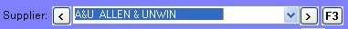
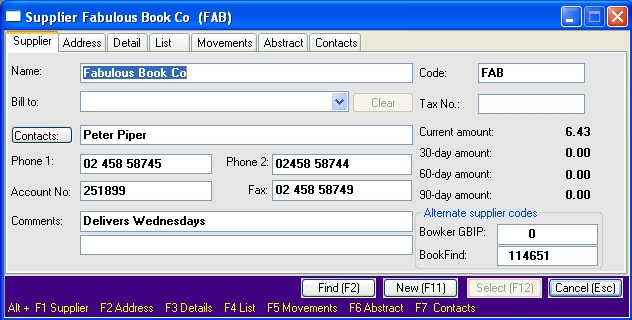
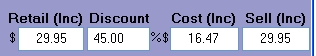
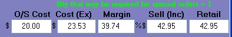

Supplier data is stored in the supplier.dbf table. Supplier details can be viewed in the Supplier Master window which can be opened in many places throughout the program:
| · | From the main menu: select Tables/ Supplier Master.
|
| · | By using the 'three person' icon on the toolbar (on the end at the right):
|
| · | By using the F3 button in many windows in the program.
|
 |
| · | In many windows, clicking the Alt F3 button, will load the last supplier you used.
|
Supplier Master window
The Supplier Master window has seven tabs displaying different information about your suppliers:
Supplier tabs
| · | Supplier – the supplier code fields, name and phone fields etc.
|
| · | Address – customer's addresses, email address, Pacstream number, SAN and web site.
|
| · | Detail – supplier's currency and receiving and accounts export settings.
|
| · | List – contains a browser displaying all your suppliers.
|
| · | Movements – a summary by month of the last year's sales, receipts, returns etc for the supplier.
|
| · | Abstract – a free text form where you can record your notes about the supplier.
|
| · | Contacts - shows all contacts listed for this supplier.
|
Displaying tabs
To open a tab (or close an open tab), use the right mouse to open the context menu and then select the required tab. Alternatively, use the shortcut keys listed at the bottom of the window. E.g. Alt F5 (i.e. hold the Alt button down and press the F5 function key) will open (or close) the Movements tab.
On each computer, you can save which tabs you want to open by default. With the window displaying only the tabs you want, and with the tab you want displayed first showing uppermost, use the right mouse to open the context menu and then select 'Save as default view'.
Note: to speed up the opening of the supplier master, you may wish to have only the tabs you regularly use open by default.

Tabs – detailed notes
Most of the fields in the supplier master are self- explanatory. Below are the fields which may need explaining.
Supplier tab
Code
A code of four characters is used to uniquely identify a supplier.
Changing a code
You can change the supplier code here. Click on the right mouse button to open the context menu and select the Global Change option. A pop-up window will open where you can choose to type in the new code for your selected supplier or where you merge the current supplier into another supplier.
Contacts
You can record your various contacts in the contacts table. The primary contact is displayed next to the Contacts button. To view, add or edit contacts, click on the button. The will open the Contacts window. You can also view contacts on the Contacts tab

Notes
| · | Use the arrow buttons on the left to navigate through the various contacts.
|
| · | Use the arrow buttons on the right to navigate through the various addresses for this customer.
|
| · | The main contact is set using the Main Contact (F8) check box.
|
| · | To edit a contact, just start typing. The Add button caption will change to 'Save (F3)' and the Exit button to 'Cancel (Esc)'. Use the cancel button to undo any changes.
|
| · | To add a contact, click the Add (F3) button. The fields will clear and you can type in the contact details.
|
Bill to key
Bill to key: if the supplier is a branch or division of a supplier, you can have their invoices billed to a head office. Enter that head office supplier code in the Bill to field.
Tax number
In Australia this is the ABN. In New Zealand it is the GST number.
Alternate supplier codes
Bowker GBIP and Nielsen Bookdata both have their own codes for suppliers. You can map your suppliers to theirs' by entering their supplier codes here.
Address tab
| · | The supplier master allows for a postal address and an address for returns.
|
| · | Clicking one of the Print Label buttons to print an address label.
|
| · | For suppliers who have a Pacstream account, set the EDI combo box to 'Pacstream' and enter their SAN number in the SAN field.
|
| · | For suppliers to whom you wish to email purchase orders set the EDI combo box to 'email' and ensure an email address is entered in the Email field.
|
Details tab
On the details tab you can set up information on how the supplier invoices you. Suppliers may invoice you using different pricing methods. They may give you a set discount off the recommended retail price or just charge you a set price. Foreign currency suppliers will charge you an amount in their currency; your cost price will vary with changes in the exchange rate. Most suppliers will include GST on prices on their invoices; some will only show it as a total. When setting selling prices, you may want to work on a standard margin or markup. To assist you when you are receiving products into stock, you can set up suppliers to reflect how they invoice you.
Currency field
Set this field to the currency the supplier uses on their invoices. If this currency is your local currency, the supplier will be set as 'local supplier'; otherwise the setting will be "foreign currency". By setting the supplier as foreign currency, the money amounts displayed in the Creditors windows and on Credit Claims will be the supplier's currency.
Note: you will need regularly to set the exchange rates in the Currency window as the Receiving window will use these to calculate your cost and sell prices. The Currency window is opened from the main menu: Tables/ Authority Tables/ Currency.
Standard discount
If the supplier gives you a standard discount, you can record it here.
GST inclusive
If the supplier's invoices show you cost price as inclusive of GST, tick this checkbox. The pricing fields in the receiving window will display prices with or without GST depending on this setting:

It you have this setting right, then in the Receiving window you can just copy in the price of each line from the invoice. This is much simpler than having to calculate the GST on each line.
In the above example:
| · | The GST inclusive flag is set to true.
|
| · | The pricing method is 'discount off retail' (see below)
|
| · | Your standard discount is 45%.
|
| · |
|
| · | The prices display 'Inc' to show they are GST inclusive.
|
| · | The operator would type '29.95' into the Retail field.
|
| · | The program would calculate the cost price of 16.47 which is inclusive of tax.
|
| · | When the receipt is posted into stock, the cost price to be stored in the master will be 16.47 less the tax.
|
GST exempt
If the supplier's invoices do not have GST charges, tick this checkbox.
Pricing methods
See the Goods Inwards chapter for a full explanation of the effect of the pricing methods.
No Auto Calculations
With the checkbox 'No Auto Calculations' ticked, the edit line of the Receiving window will display according to the pricing method set, but it will not automatically calculate the Cost or Sell fields; you will need to overtype them when required.
Not Set
This option is the default option and will suit most suppliers.
In the Receiving window, you will need to manually key in the Cost, Sell and Retail Price where necessary. The 'No Auto Calculations' setting has not effect in this option.
Discount off retail
The Receiving window will display the Retail field as the first of the price fields. With 'auto calculations' set, the cost price will be calculated at retail less the supplier's standard discount.
Discount off sell
Note that this setting is very seldom used.
The Receiving window will display the Sell field as the first of the price fields. With 'auto calculations' set, the cost price will be calculated at selling price less the supplier's standard discount.
Markup on Cost
The Receiving window will display the price fields in the order: Cost, Markup, Sell, Retail. With 'auto calculations' set, the selling price will be calculated by applying the markup percentage to the cost price. The default markup used is the setting in the 'Discount' field.
Margin
The Receiving window will display the price fields in the order: Cost, Margin, Sell, Retail. With 'auto calculations' set, the selling price will be calculated by applying a set margin to the cost price. The default margin used is the setting in the 'Discount' field.
Foreign currency
The available pricing calculators for a foreign currency supplier are:
| · | not set,
|
| · | markup on cost,
|
| · | margin
|
When a foreign currency supplier is selected in the Receiving window the display will change as illustrated below:

The exchange rate from the currency file is used to calculate the (local currency) cost price from foreign cost price. Using the margin or markup calculator is the same as for local currencies.
Other settings
| · | Market country code – this setting is only used in creating Onix export files, so as to comply with the Onix standard.
|
| · | Minimum order value – if the supplier has a minimum order value, you can enter it here. It will display in the Draft Orders window.
|
| · | Lead time – the usual time in weeks that a supplier takes to deliver. It will display in the Draft Orders window.
|
| · | Allow returns – if the supplier does not allow returns, tick this checkbox. By default, the supplier will be excluded when you regenerate a returns list.
|
| · | Prompt for specials – if this flag is set, the program will display a pop up warning window when you attempt to create a special order with this company. If the supplier has a minimum order value or charges a small order surcharge, you should set this flag.
|
| · | Exclude from accounts exports – exclude the supplier, and transaction for this supplier, exporting to MYOB.
|
| · | Exclude from Onix exports – excludes products from this supplier from exporting to Onix files.
|